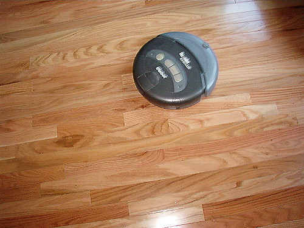

Intro to Conversational Interface Design
Welcome!

My name is Willamina O'Keeffe. Please join us on slack at: https://gdirdu-slack-invite.herokuapp.com/
Welcome!
Tell us about yourself.
- Who are you?
- What do you hope to get out of the class?
- What is something awesome that happened this week?
Goals:
By the end of the day you will:
- Know the basics of conversational interface design
- Experience designing and building chatbots
- Understand unique challenges of designing for voice
- Have lots of resources to continue learning!
What are Conversational Interfaces?
Like GUIs, conversational interfaces are a way for users to interact with a product or service.
What are Conversational Interfaces?
"When it comes to bots, software meets humans on our playing field; they adhere to the way humans communicate and try to adjust to our way of thinking."
-Amir Shevat in 'Designing Bots'
Example Conversational Interfaces
Agentive vs Assistive
"Virtual Agent" is a popular term for converstional interfaces like Ask Jenn, but there is a difference between agentive technology and conversational assistants
Agentive vs Assistive
Agentive technology helps the user by performing tasks on their behalf
Example: Roomba
Photo credit: Celeste Lindell! cc
Agentive vs Assistive
Assistive technology helps the user complete a task
Examples:
- Booking a flight or hotel (like Ask Jenn)
- Placing an order (like Gwynn)
This is the type of technology we will be focused on today
Artificial intelligence
- Machines that can perform tasks that require intelligence like visual recognition, decision making, etc.
- Intelligence can be general or narrow
- Some conversational interfaces use AI; however, most at this time do not
- Siraj Ravel has a helpful video series on deep learning if you want to know more
Natural Language Processing/Understanding
- Machines parse human speech to understand intentions
- Model gets trained on phrases and then makes accurate predictions when encountering new phrases
- Tools available for building that make this tech available without having to code
When Good Bots Go Bad
- Important to consider how a bot may become biased
- Training the bot and interactions it has reinforces what it is learning
- Bots don't know what is morally and ethically acceptable unless you teach them
- Example:
Designing a Conversation
"When designing conversations, we go back to the ancient art that has been at the core of our society for ages: talking to each other."
-Amir Shevat in 'Designing Bots'
Designing a Conversation
Use of conversational interface depends on your needs
Some questions to ask yourself:
- Where are you trying to reach your audience?
- What are you trying to acheive/what is your service?
- What will the bot add to the user experience?
Designing a Convesation
Using a bot or conversational interface has benefits:
- Reduce the need to download another app
- Reach people on platforms where they already are (ex. Facebook Messenger)
- Lots of people already know how to have a conversation!
Designing a Convesation
Remember, choosing to add a conversational interface because it is the new hot thing is not a good reason.
Designing a Convesation
What kind of bot?
Where to Learn More!
Books:
Videos: